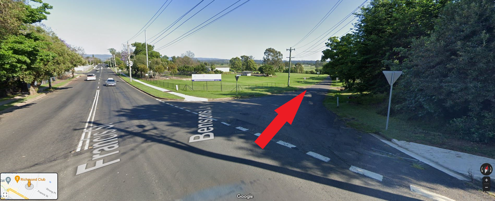
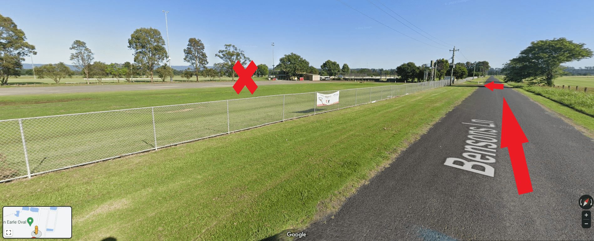
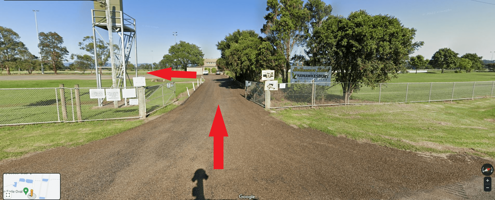
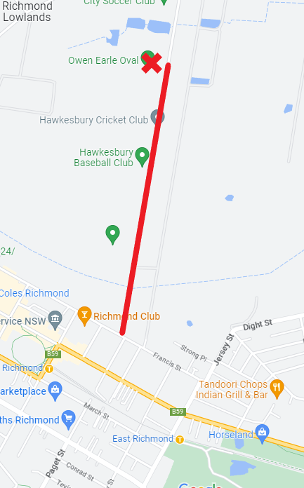

23 Bensons Ln, Richmond Lowlands NSW 2753
Visual directions, below.
1) Turn on to Bensons Lane off Francis Street.
2) Travel along until you approach the expansive car park.
Notice the yellow and green sign burried in the trees. Turn in, then veer left.
 Call Coach Nick on 0452 583 279 if you get lost.